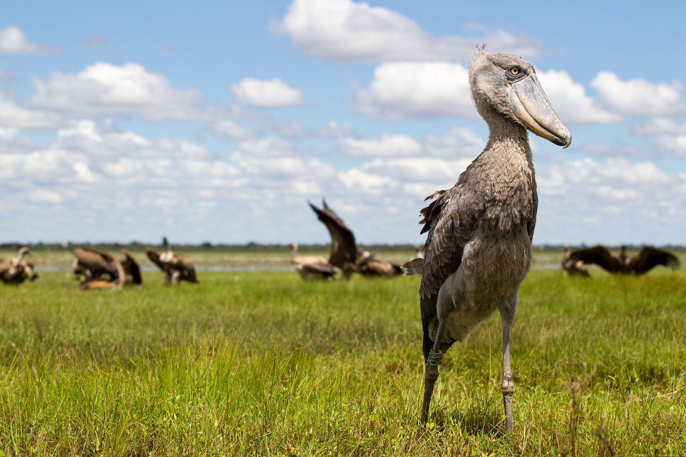

Platypus

The platypus (Ornithorhynchus anatinus), sometimes referred to as the duck-billed platypus, is a semiaquatic egg-laying mammal endemic to eastern Australia, including Tasmania. The platypus is the sole living representative of its family (Ornithorhynchidae) and genus (Ornithorhynchus), though a number of related species appear in the fossil record.
Shoebill
The shoebill (Balaeniceps rex) also known as whalehead, whale-headed stork, or shoe-billed stork, is a very large stork-like bird. It derives its name from its enormous shoe-shaped bill. It has a somewhat stork-like overall form and has previously been classified with the storks in the order Ciconiiformes based on this morphology. However, genetic evidence places it with the Pelecaniformes. The adult is mainly grey while the juveniles are browner. It lives in tropical east Africa in large swamps from Sudan to Zambia.
Beluga

The beluga whale (/bɪˈluːɡə/) (Delphinapterus leucas) is an Arctic and sub-Arctic cetacean. It is one of two members of the family Monodontidae, along with the narwhal, and the only member of the genus Delphinapterus. It is also known as the white whale, as it is the only marine mammal of this colour; the sea canary, due to its high-pitched calls; and the melonhead, though that more commonly refers to the melon-headed whale, which is an oceanic dolphin.